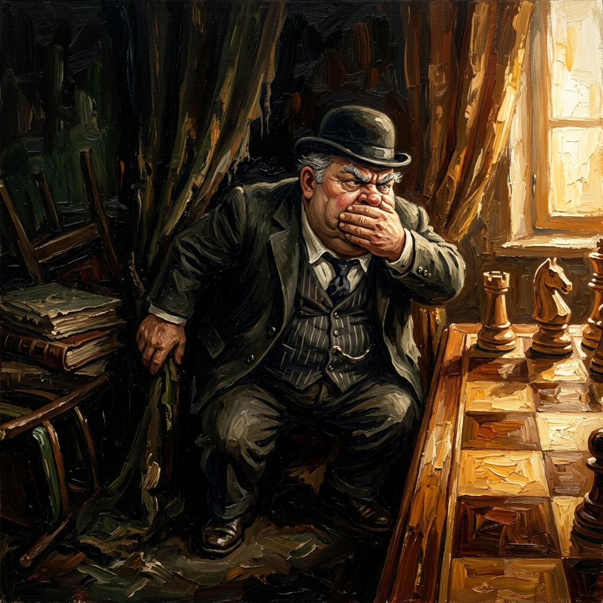
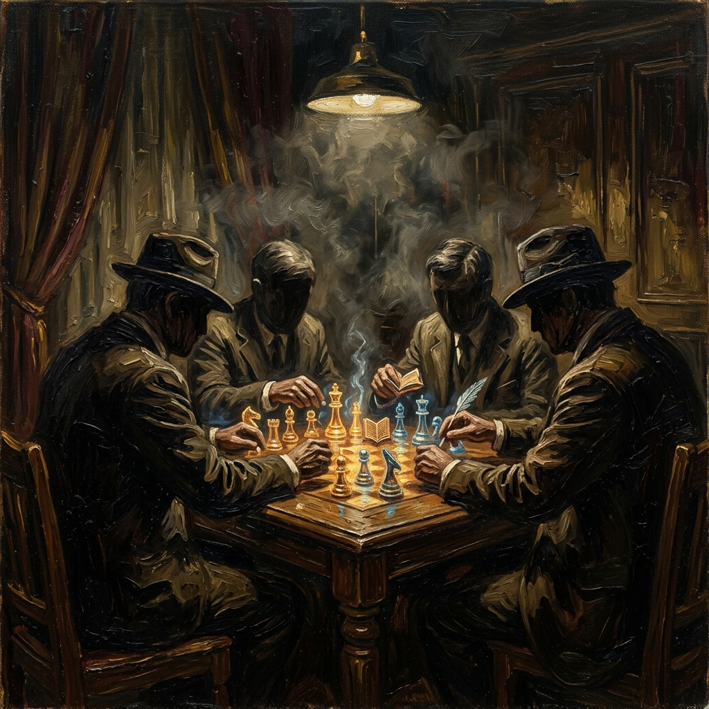

Teoría de Juegos, Simulación y el Fiasco del Calendario 2026
El presente documento disecciona la reciente crisis administrativa respecto a la modificación del calendario escolar. Utilizando la Teoría de Juegos del Profesor Jiang, demostramos cómo las decisiones de la cúpula sindical y las autoridades no obedecen a la pedagogía, sino a cálculos políticos de supervivencia a corto plazo.
INICIAR RECORRIDOLa Falsa Promesa del 5 de Junio
La jugada inicial provino de la SEP (bajo Mario Delgado) y encontró eco inmediato en la SEC Sonora (liderada por Froylán Gámez). Utilizando el calor extremo como pretexto, se anunció un recorte abrupto del ciclo escolar. En la Teoría de Juegos, esto se define como Señalización Engañosa y Asimetría de Información. Lanzaron la señal para comprar la simpatía efímera de una base agotada, un movimiento populista sin rigor técnico.
La Reacción de la Base
Ante el anuncio, docentes y escuelas comenzaron a reprogramar evaluaciones y clausuras. Las "fábricas de ignorancia" utilizaron a la base como el peón de sacrificio: al crear una falsa expectativa, desestabilizaron el entorno pedagógico. El Magisterio intentó adaptar la planeación, asumiendo un costo operativo altísimo que las autoridades ignoraron.
El "Siempre No" de Claudia Sheinbaum
La Presidenta, enfrentando la presión del marco normativo federal, ejecuta un Retroceso Táctico para mitigar el Costo de Reputación. Al revertir el calendario a su cierre original del 15 de julio, exhibió la desconexión total con la SEP. Optó por desautorizar a su propia línea de mando antes que asumir el costo histórico de recortar clases.

El Equilibrio de Nash Subóptimo en la Sección 28
Mientras el tablero ardía, la Sección 28 del SNTE optó por el Equilibrio de Nash Subóptimo: la inacción. Al no defender la certeza laboral durante el vaivén de fechas, el SNTE confirmó su papel como administrador del silencio. Juegan a no perder, asegurando sus cuotas, mientras el maestro sufre la incertidumbre.
La Huelga Mundialista
La CNTE en Sonora, con miopía táctica, respondió llamando a movilizaciones y paros en pleno Mundial de Fútbol. Desde el análisis de Jiang, juegan un Juego de Suma Cero mal planteado. Pierden capital social y entregan el argumento para ser reprimidos mediáticamente.
Gobernador Alfonso Durazo
Durazo quedó atrapado en el clásico dilema del prisionero: lealtad al centro (SEP) versus la realidad climática innegable de Sonora. Su posición reflejó la subordinación del estado ante el federalismo centralista, atando la educación local a la agenda de la Ciudad de México.
El Costo de la Incongruencia (SEC Sonora)
Al avalar primero el cierre del 5 de junio y luego tener que recular por mandato presidencial, Froylán Gámez dilapidó la credibilidad institucional de la SEC. Un actor que modifica sus reglas operativas en menos de 72 horas pierde toda autoridad moral.

El Cártel de la Influencia
SEP, SEC, SNTE y CNTE operan como cárteles de influencia donde la educación es meramente moneda de cambio. La incertidumbre del calendario fue un síntoma de un sistema diseñado para mantener a la base reaccionando, sin tiempo para pensar ni organizarse.
Inteligencia vs Simulación
Frente a la simulación, el MS impone la técnica. Nuestra respuesta no es el paro (CNTE) ni el silencio (SNTE). Aplicando inteligencia estratégica, documentamos contradicciones y estructuramos demandas viables como la PIP. Nuestro jaque mate consiste en despojar a la cúpula de su monopolio narrativo.
Improvisación Administrativa | Cero Tolerancia
Defensa de Derechos | Rigor y Datos
MAGISTERIO SONORENSE (MS)
LA VICTORIA NO ESTÁ EN EL GRITO,
SINO EN EL MÉTODO
Directriz para el Ciclo 2026-2027
El Magisterio Sonorense establece una directriz clara: cero tolerancia a la improvisación que afecte los derechos laborales. Invitamos a la base a dejar de confiar en intermediarios caducos. La verdadera defensa requiere inteligencia y una estrategia que las fábricas de ignorancia son incapaces de comprender.